1. pwd — When you first open the terminal, you are in the home directory of your user.
To know which directory you are in, you can use the “pwd” command.
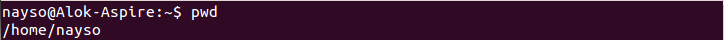
2. ls — Use the "ls" command to know what files are in the directory you are in.
You can see all the hidden files by using the command “ls -a”.
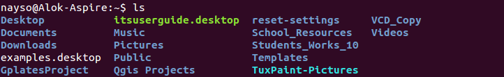
3. cd — Use the "cd" command to go to a directory. For example, if you are in the home folder,
and you want to go to the downloads folder, then you can type in “cd Downloads”.
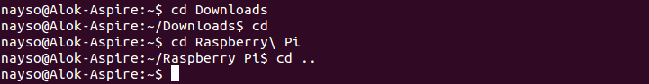
4. mkdir & rmdir — Use the mkdir command when you need to create a folder or a directory.
For example, if you want to make a directory called “DIY”, then you can type “mkdir DIY”.
Remember, as told before, if you want to create a directory named “DIY Hacking”, then you can type “mkdir DIY\ Hacking”.
Use rmdir to delete a directory. But rmdir can only be used to delete an empty directory.
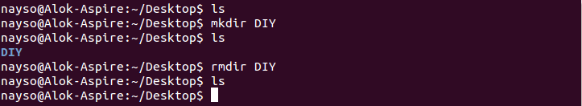
5. rm - Use the rm command to delete files and directories. Use "rm -r" to delete just the directory.
It deletes both the folder and the files it contains when using only the rm command.
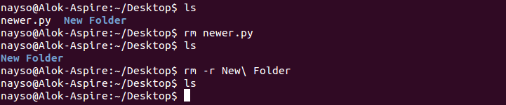
6. touch — The touch command is used to create a file. It can be anything, from an empty txt file to an empty zip file.
For example, “touch new.txt”.
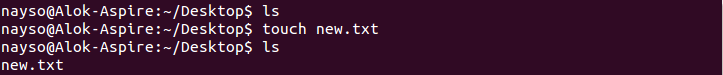
7. cp — Use the cp command to copy files through the command line. It takes two arguments.
The first is the location of the file to be copied, the second is where to copy.
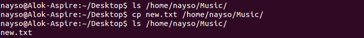
9. mv — Use the mv command to move files through the command line. We can also use the mv command to rename a file.
For example, if we want to rename the file “text” to “new”, we can use “mv text new”.
It takes the two arguments, just like the cp command.
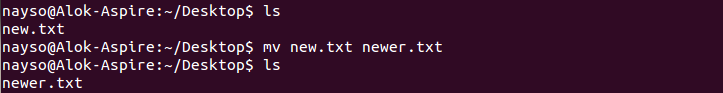
10.cat — Use the cat command to display the contents of a file.
It is usually used to easily view programs.
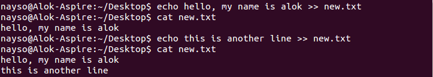
11.nano, vi— nano and vi are already installed text editors in the Linux command line.
The nano command is a good text editor that denotes keywords with color and can recognize most languages.
And vi is simpler than nano. You can create a new file or modify a file using this editor.
For example, if you need to make a new file named "check.txt",
you can create it by using the command “nano check.txt”.
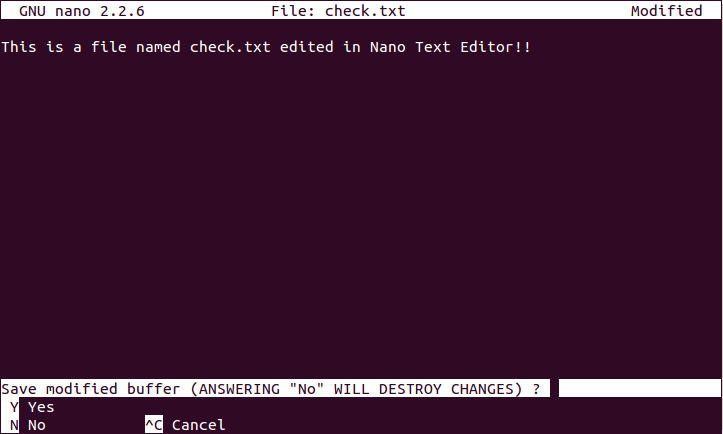
12.sudo — A widely used command in the Linux command line, sudo stands for "SuperUser Do".
So, if you want any command to be done with administrative or root privileges, you can use the sudo command.
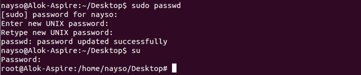
13.chmod — Use chmod to make a file executable and to change the permissions granted to it in Linux.
Imagine you have a python code named numbers.py in your computer. You'll need to run “python numbers.py”
every time you need to run it. Instead of that, when you make it executable, you'll just need to run “numbers.py”
in the terminal to run the file. To make a file executable, you can use the command “chmod +x numbers.py” in this case.
You can use “chmod 755 numbers.py” to give it root permissions or “sudo chmod +x numbers.py” for root executable.
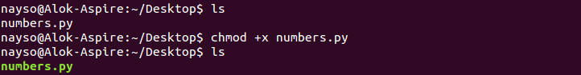
14.ping — Use ping to check your connection to a server. Wikipedia says, "Ping is a computer network administration software utility used to test the reachability of a host on an Internet Protocol (IP) network". Simply, when you type in, for example, “ping google.com”, it checks if it can connect to the server and come back. It measures this round-trip time and gives you the details about it. The use of this command for simple users like us is to check your internet connection. If it pings the Google server (in this case), you can confirm that your internet connection is active!
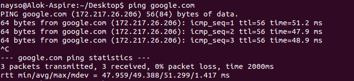